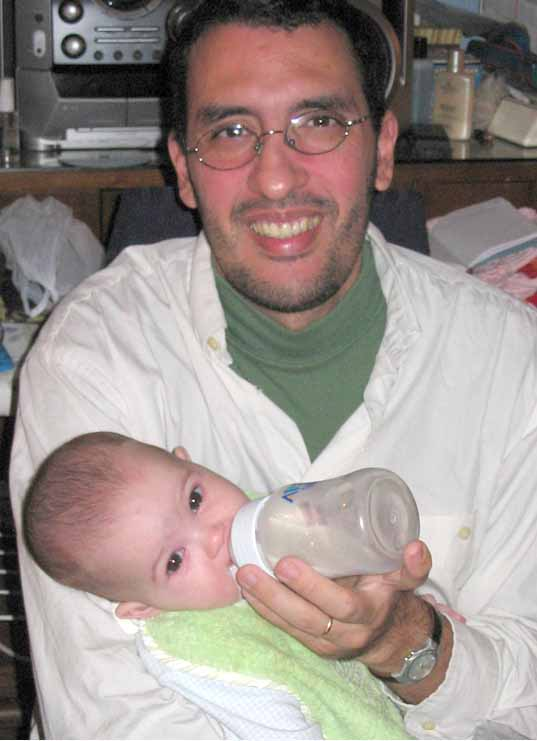

Fernando Cacciola
 Fernando Cacciola has been programming since 1984 when he got his hand on a Tandy Color Computer II for the first time. He started with BASIC at the time, but quickly moved to Assembly Language to get the most out of the Home Computers of the time (from a Sinclair 1500 [Z80] to a Commodore 64 [Motorola 6510]).
In 1990 he discovered the C programming language and started working as a professional programmer. In 1995 he discovered C++, and during his long time employement in a company producing CAD systems, the fields of Computational Geometry, Computer Graphics, Image Processing and Numerics in general.
He studied Biochemistry at the John F. Kennedy (Argentina) University for 4 years, but had to drop because of his full-time job as a programmer. He would complete a CS degree if he only had the time.
After 13 years of being an employed programmer (in just a couple of companies), by the end of 2003 he became a freelancer and founded SciSoft, a company specialized in technically/scientifically-oriented software.
He loves to spend his spare-time, which isn't much, with his wife Silvia and his daugther Brisa. By the time of this writing (October 2004) he is expecting a second child. If there's any time left, he enjoys stoping by a friend with his family, and studying math, pyshics and chemistry. He would also enjoy some outdoor activity or sport, but there is no time left for this.
He was born in 1971 in Buenos Aires, Argentina.